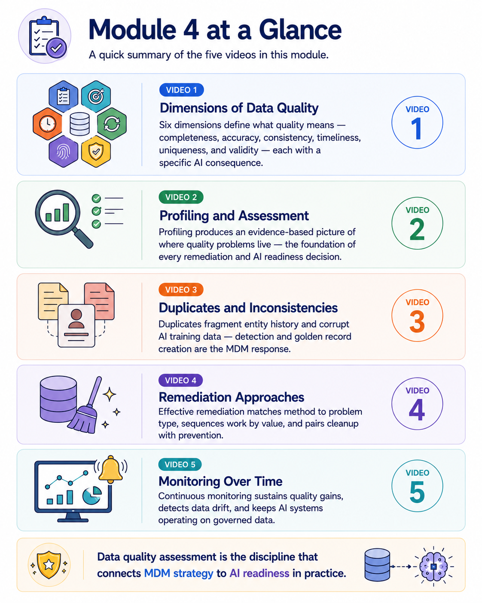
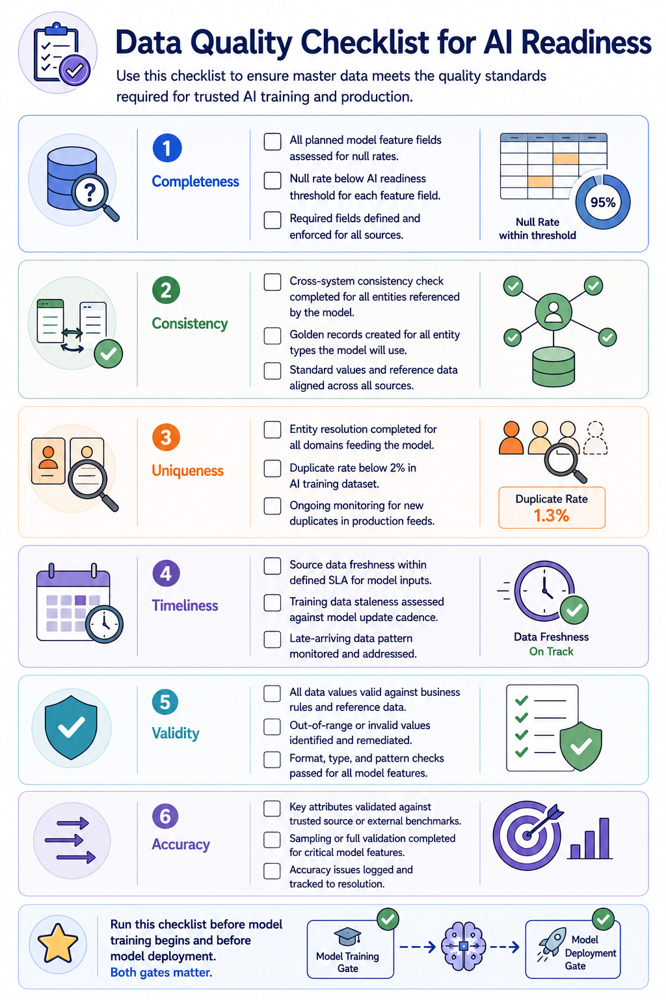
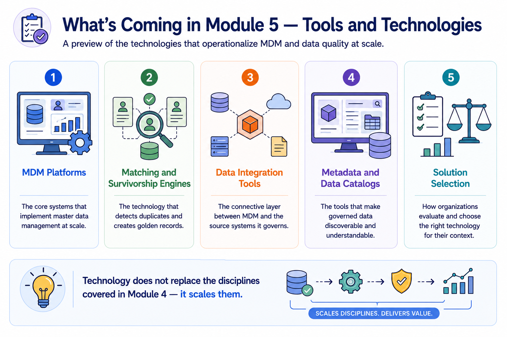
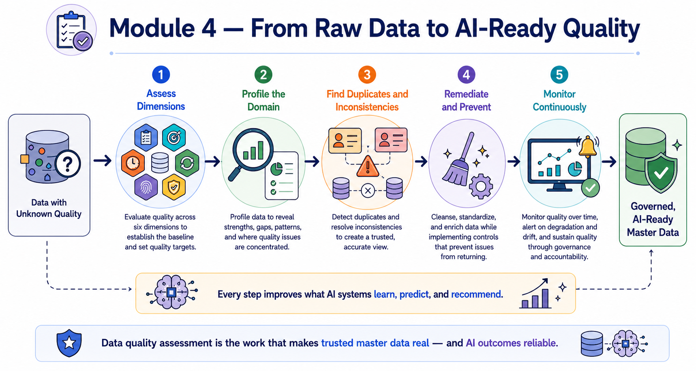

Module Recap
Module support notes
What This Module Covered
The through-line across every page in this module is the relationship between data quality and AI outcomes. Every dimension has an AI consequence. Every profiling finding has an AI readiness implication. Every duplicate and inconsistency creates a specific AI failure mode. Every remediation output is an input to AI-ready data. And every monitoring practice has a direct role in sustaining AI model performance.
This framing reflects the reality that organizations building AI capabilities face today — data quality is not a prerequisite that can be addressed separately from AI development. It is a continuous discipline that runs alongside AI programs and determines their reliability at every stage.
- Dimensions of Data Quality — six dimensions define what quality means, each with a specific AI consequence
- Profiling and Assessment — profiling produces an evidence-based picture of where quality problems live, the foundation of every remediation and AI readiness decision
- Duplicates and Inconsistencies — duplicates fragment entity history and corrupt AI training data; detection and golden record creation are the MDM response
- Remediation Approaches — effective remediation matches method to problem type, sequences work by value, and pairs cleanup with prevention
- Monitoring Over Time — continuous monitoring sustains quality gains, detects data drift, and keeps AI systems operating on governed data

The AI Quality Checklist
This checklist distills the practical AI readiness implications of every concept covered in Module 4 into a single reference that data teams and AI program teams can use together. It is structured as a formal gate review — a set of conditions that should be verified before model training begins and again before model deployment.
Organizations that adopt this checklist as a standard practice find that it significantly reduces the frequency of AI quality failures in production, because it makes data quality readiness an explicit, documented condition of model development progress rather than an assumed prerequisite that nobody formally verifies.
Tip
Run this checklist at two gates — before model training begins and before model deployment. Both matter. A domain that passes the pre-training gate can still degrade before deployment if monitoring is not in place between the two milestones.

Preparing for Module 5
Module 5 examines the tools and technologies that operationalize the practices covered in this module. Data profiling tools automate the assessment work. Matching and survivorship engines implement the duplicate detection and golden record creation. Data quality management platforms automate the rule-based monitoring.
Understanding these technologies is not about selecting software — it is about understanding how the right tools make the disciplines in this module faster, more consistent, more scalable, and more reliable as the volume of data and the number of AI systems that depend on it continue to grow.
Note
Technology does not replace the disciplines covered in Module 4 — it scales them. Module 5 covers five technology categories: MDM Platforms, Matching and Survivorship Engines, Data Integration Tools, Metadata and Data Catalogs, and Solution Selection.

Every step in the Module 4 journey moves data closer to a state where AI systems can learn from it, predict with it, and recommend based on it reliably.
